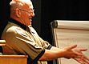
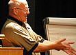

All about BOFs
What is a BOF?
"Birds of a Feather" sessions are meetings that you organise at the conference, about topics that you want to discuss.
The Software Practice Advancement conference continues the great tradition of knowledge sharing between all participants, not just the session leaders. BOF sessions are an important and popular way of doing this.
How do I set up a BOF?
Slots are available for BOFs on each day of the programme. There will be a noticeboard on which to propose BOFs using the cards that will be available in your delegate pack. Additional cards will also be available at the organiser’s desk. Interested delegates can sign up by adding their name to the card. The organisers will assign rooms based on the number of interested parties.
How do I run a BOF?
Any way you like!
If there are just a few participants, you might just have a chat in the bar. If there are more, you may choose to start by outlining your thoughts or questions, and then let others contribute. Begin by clarifying the general topic, and a list of areas to deal with.
Some of you will be more familiar with organising meetings than others. If you need any help organising or running your BOF, the conference committee will be very happy to help. Just ask the conference organisers, the BOF manager, the Conference and Programme Chairs or any other member of the conference committee.
Why would I run a BOF?
You might organise and run a BOF if:
- You want to discuss a specific technique, tool, or pattern or technology.
- You want to get some reaction a new idea you have had.
- You're looking for a new job!
- You need help with a project.
- You want to extend discussion on a subject from a conference session you’ve been to.